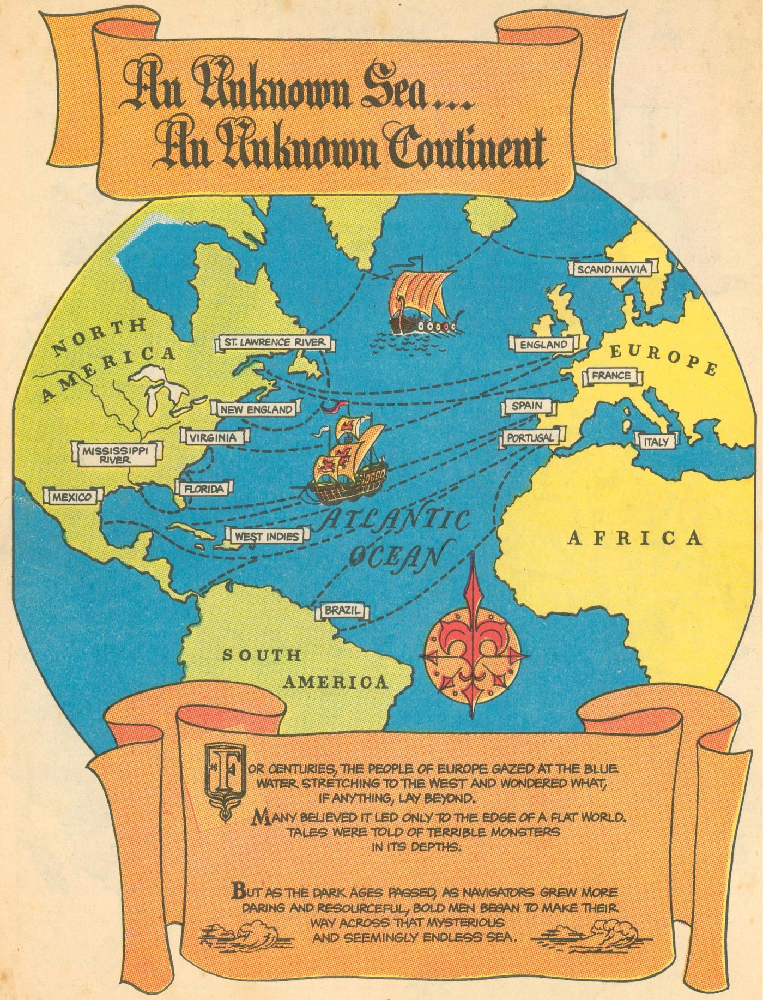

You're the fact-checker. For each part: read the comic on the left → get the check right → read the fact file → write 1–2 sentences. Done = 4 green parts, then turn in at the bottom.
Word help (tap to open)
- Perspective = point of view, how one person or group sees an event
- Myth = a story lots of people believe that isn't true
- Legend = an old story that may not be true
- Taíno (ty-EE-noh) = the people who lived on the Caribbean islands in 1492
- Indies = what Europeans called the lands of Asia
- Encounter = a meeting between two peoples
- Obscure poverty = poor and forgotten

Click the page to make it bigger.
Turn in your work
Your work saves on this device, so you can come back later. Your teacher sees it after you turn it in.
Comic: A Picture Story of the United States (1953), made for the United States Information Service, a U.S. government agency. Public domain. Scan: University of Nebraska–Lincoln Libraries, educational comics collection, via the Internet Archive. Reader pages 1–5 are comic pages 2–5; page 5 is split in two.